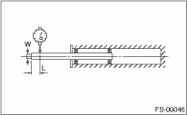

FRONT SUSPENSION > Front Strut
Check the removed part for wear, damage and cracks, and then repair or replace it if defective.
1. Check for oil leaks.
2. Move the piston rod up and down to check that it operates smoothly.
3. Piston rod play
Measure the play as follows:
Fix the outer shell in place and fully extend the rod. Set a dial gauge at the end of rod L [10 mm (0.39 in)], and then read the dial gauge indication P1 while applying a force of W [20 N (2 kgf, 4 lbf)] to the threaded portion. Apply a force of 20 N (2 kgf, 4 lbf) from the opposite direction of “W”, and then read the dial gauge indication P2.

Play limit (P1 + P2):
0.8 mm (0.031 in)
If the play exceeds the limit, replace the strut.
Check the rubber part for deformation, cracks or deterioration, and replace with a new part if there is a problem.
Replace it with a new part if cracked or damaged.
If a permanent strain is found, replaced it with a new part. Refer to the specifications to inspect the wheel arch height even if the vehicle is not inclined because of a flat tire or a biased load. If the tolerance is out of specifications, replace with a new part.
Replace it with a new part if cracked or damaged.